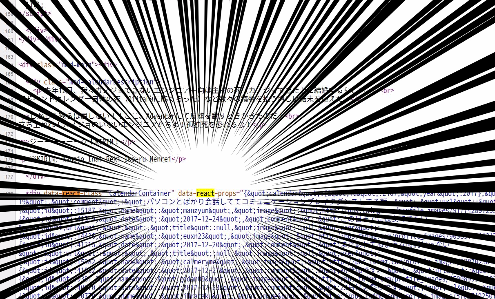
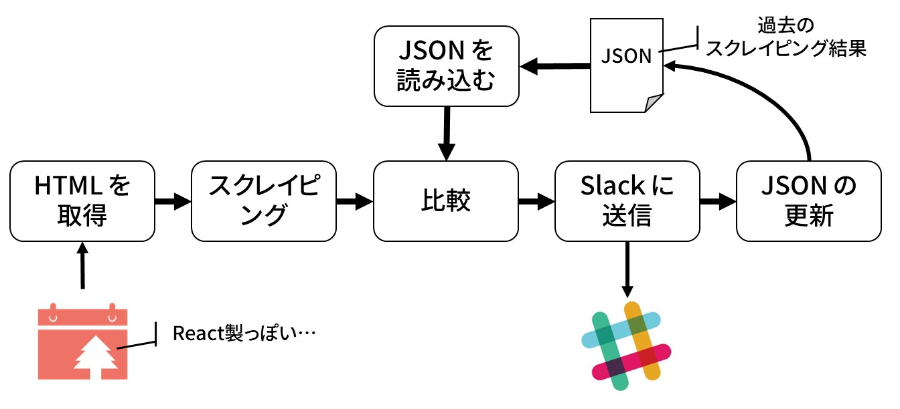
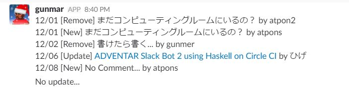

Re: ゼロから作る ADVENTAR の Slack Bot (Haskell 編)
弊サークルはここ3年ほど ADVENTAR というサービスを利用してアドベントカレンダーをやっている．
〇iita のアドベントカレンダーと違い，ADVENTAR は RSS 機能などが無いため，自前でそういったプログラムを書く必要があった． ずーーーっと RSS 機能は無いと思ったけど，実はそんなことなかった(笑) URL の末尾に .rss と付ければ良いらしい． まぁ，細かい通知はできないみたい(？？)なので作った意味はない事もない？？
できないと思って作ってしまった記事はこちら．
しかし…悲しいことに ADVENTAR のページの構成が変わり，以前の Bot では動かなくなってしまった… そこで，致し方ないので作り直すことにした(しょうがないなーもー♪)．
今回はその前編です(書いてたら長くなったので分けた)．
原因
で，原因はというと，コードをよく見ると React.js を使った ようになっていた点である．

つまり，静的な DOM が生成されない！ もともとは，その静的な DOM から Web Scraping して更新を確認していたのだ．
そうなってくると，解決方法はひとつしかない(ひとつかどうかは知らん)…そう最近流行り(要出典)の Headless Browser である． Headless Browser とは，ざっくり言うと，画面の無いブラウザである． これを使うと API を叩いてブラウザの動作を再現し，それによって動的に取得できる DOM をプログラム内で用いることが出来る． 動的に DOM を生成する場合にも Web Scraping をできるようになるし，もともとはブラウザアプリのテストに使われてたのかな？
ここまでくると，Google Apps Script では手に負えないので，Haskell で記述し，そのプログラム Dockerize し，CircleCI から実行するという荒業 をすることにした． CircleCI なら cron できるようになったし(TravisCI もできるけど，個人的には CircleCI の config の方が書きやすい)．
(※ Haskell を使う理由は，完全に個人の趣味です)
設計
- Headless Browser を介して DOM を取得
- DOM を Web Scraping
- 前の情報を書いておいた JSON ファイルを読み込む
- ふたつを比較する
- 比較結果を Slack に通知
- 無事通知できてかつ差分があれば JSON を更新

ちなみに，特に意味は無いのだが，各手続きの関数を別々のファイルに書いた．
- Html.hs : (1) の Headless Browser の関数
- Scraper.hs : (2) の Web Scraping する関数
- Json.hs : (3) の JSON ファイルの読み込みと (6) の更新をする関数
- Entry.hs : (4) の比較をする関数(と全体の型定義)
- Slack.hs : (5) の Slack に通知する関数
Main.hs は全体をくっつける部分と，差分をいい感じなメッセージに変える役割を担っている．
作る
さぁ皆さんお待ちかねの Haskell のターンです！！
Scraper
- の Headless Browser は後回しにして，まずは Scraper を定義する． 実際に Headless Browser は Haskell でうまく動くかよくわからなかったので，
chrome --headlessを使って取ってきた DOM をファイルにコピペして，それで試しながら先に Headless Browser 以外を実装していった．
ライブラリ
Haskell の Scraper ライブラリは意外とたくさんある． バイト先では HXT というのを使っていたが，少し直感的でないし更新が最近無いので，人気そうな scalpel を使うことにした．
こいつの特徴は関数型パーサーのように Scraper を記述できる点である． 例えば，以下のような HTML から
<html>
<body>
<div class='comments'>
<div class='comment container'>
<span class='comment author'>Sally</span>
<div class='comment text'>Woo hoo!</div>
</div>
<div class='comment container'>
<span class='comment author'>Bill</span>
<img class='comment image' src='http://example.com/cat.gif' />
</div>
<div class='comment container'>
<span class='comment author'>Susan</span>
<div class='comment text'>WTF!?!</div>
</div>
</div>
</body>
</html>class='comment' の div 要素を次のような型の値として保持したいとする．
type Author = String
data Comment
= TextComment Author String
| ImageComment Author URL
deriving (Show, Eq)(type 宣言はただの型エイリアスで，data 宣言は新しい型を定義してる)
そうすると，次のような Scraper を書くのだ．
allComments :: IO (Maybe [Comment])
allComments = scrapeURL "http://example.com/article.html" comments
where
comments :: Scraper String [Comment]
comments = chroots ("div" @: [hasClass "container"]) comment
comment :: Scraper String Comment
comment = textComment <|> imageComment
textComment :: Scraper String Comment
textComment = do
author <- text $ "span" @: [hasClass "author"]
commentText <- text $ "div" @: [hasClass "text"]
return $ TextComment author commentText
imageComment :: Scraper String Comment
imageComment = do
author <- text $ "span" @: [hasClass "author"]
imageURL <- attr "src" $ "img" @: [hasClass "image"]
return $ ImageComment author imageURLScraper 自身は comments という関数だ． Scraper str a という型は，なんかの文字列型(e.g. String, Text)を受け取り，a 型を返す Scraper というのを表している． Scrape str はモナドになっているため，関数型パーサーっぽく書けるのだ． ただし，関数型パーサーと違って，bind をつなげても入力を消費しない点に注意(例えば textComment 関数の1行目と2行目は同じ入力文字列に対して実行している)． Scraper を入れ子に適用するには croot 関数や croots 関数を用いるのだ(これ以上は割愛)．
今回の型
で，今回は次のような DOM から
<body>
<table class="mod-entryList">
<tbody>
<tr class="" id="list-2017-12-01">
<th class="mod-entryList-date">12/01</th>
<td class="mod-entryList-user">
<a class="mod-userLink" href="/users/11644">
<img class="mod-userIcon" src="http://pbs.twimg.com/profile_images/3164994798/6d931b645bef5a659f7f58562d094aaf_normal.png" width="23" height="23">
<span>atpons</span>
</a>
</td>
<td class="mod-entryList-body">
<div class="mod-entryList-comment">まだコンピューティングルームにいるの？</div>
<div class="mod-entryList-title" hidden=""></div>
<div class="mod-entryList-url" hidden="">
<a href="" target="_blank"></a>
</div>
</td>
</tr>
<tr class="" id="list-2017-12-06">
<th class="mod-entryList-date">12/06</th>
<td class="mod-entryList-user">
<a class="mod-userLink" href="/users/8528">
<img class="mod-userIcon" src="https://www.gravatar.com/avatar/6491e85d52916cfb063372cec9edb6cc?size=50&d=mm" width="23" height="23">
<span>ひげ</span>
</a>
</td>
<td class="mod-entryList-body">
<div class="mod-entryList-comment">ADVENTAR Slack Bot をパワーアップしたい</div>
<div class="mod-entryList-title">ADVENTAR Slack Bot 2 using Haskell on Circle CI</div>
<div class="mod-entryList-url">
<a href="https://matsubara0507.github.io" target="_blank">https://matsubara0507.github.io</a>
</div>
</td>
</tr>
</tbody>
</table>
</body>以下のようなデータ構造を Scraping する関数型パーサーを考える．
type Calendar = HashMap Date Entry
type Date = Text
data Entry = Entry
{ user :: Text
, comment :: Text
, title :: Text
, url :: Text
}HashMap k v コンテナ型は，いわゆる連想配列型・辞書型のことである． 単一のエントリーの型 Entry には投稿者 user とコメント comment ，投稿した記事のタイトル title と URL url のフィールドがあるって感じである．
Haskell には標準で日付型が無いので，めんどくさいからタダの文字列型 Text として扱うことにした． なので日付 (e.g. “12/03”) では無く “ABC” をキーとしたエントリーを書いてもコンパイルエラーにはならないが，まぁいいや(そういうの出来なくもないけどね…)．
Scraper 関数の実装
まずはトップレベルの関数を定義
adventarScraper :: Text -> Calendar
adventarScraper txt = HM.fromList . fromMaybe [] . scrapeStringLike txt $
chroot ("table" @: [hasClass "mod-entryList"]) (chroots "tr" scrapeEntryWithDate)
scrapeEntryWithDate :: Scraper Text (Date, Entry)
scrapeEntryWithDate = do
date <- scrapeDate
entry <- scrapeEntry
return (date, entry)
scrapeEntry :: Scraper Text Entry
scrapeEntry = undefined
scrapeDate :: Scraper Text Date
scrapeDate = undefined<table class="mod-entryList"> の子要素の tr タグの中身を全て取ってきてほしいので chroot と chroots を使って連結してる． 日付とエントリのタプルのリストが取れれば，HashMap.fromList で日付をキーにしたエントリーの HashMap が作れる．
次にエントリーと日付を取ってきてみる．
scrapeEntry :: Scraper Text Entry
scrapeEntry =
user' <- scrapeUser
comment' <- scrapeComment
title' <- scrapeTitle
url' <- scrapeUrl
return $ Entry user' comment' title' url'
scrapeDate :: Scraper Text Date
scrapeDate = text ("th" @: [hasClass "mod-entryList-date"])
scrapeUser :: Scraper Text Text
scrapeUser = "td" @: [hasClass "mod-entryList-user"] `chroot` text "span"
scrapeComment :: Scraper Text Text
scrapeComment = text ("div" @: [hasClass "mod-entryList-comment"])
scrapeTitle :: Scraper Text Text
scrapeTitle =
text ("div" @: [hasClass "mod-entryList-title", notHidden]) <|> pure ""
scrapeUrl :: Scraper Text Url
scrapeUrl =
text ("div" @: [hasClass "mod-entryList-url", notHidden]) <|> pure ""
notHidden :: AttributePredicate
notHidden = notP $ "hidden" @= ""基本的には何となく読めるだろう(正直，関数として小分けにする必要は無いが，分けておくと ghci とかでデバッグしやすいのだ)． ちなみに，notHidden は hidden 属性が付いていない場合に取得してくるという意味だ． 何故かというと，記事を先に登録しておくと，その日になるまで hidden でブラウザでは見れないだけで，DOM には書いてあるためだ． 記事を先に登録して置いたら，通知で見えてしまっては嫌でしょ？(笑)
JSON
Haskell で JSON を扱うのは簡単． aeson というライブラリが，ほぼほぼデファクトスタンダードとなっている． aeson は任意の型を FromJSON 型クラスや ToJSON 型クラスのインスタンスにしてあげるだけで，デコーダーとエンコーダーを実装してくれる． しかも，Generics という機能を使えば，一行で終わる．
data Entry = Entry
{ user :: Text
, comment :: Text
, title :: Text
, url :: Url
} deriving (Show, Eq, Generic)
instance ToJSON Entry
instance FromJSON Entryわぁすごい(HashMap 型は既にインスタンスの定義がされてる)．
問題は文字コードで，今回は日本語(マルチバイト文字)を含むので，次のように JSON ファイルの読み込みと書き込みを定義してあげる．
import Data.Aeson (decode)
import Data.Aeson.Encode.Pretty (encodePrettyToTextBuilder)
import Data.Text (Text, unpack)
import Data.Text.Lazy.Builder (toLazyText)
import Data.Text.Lazy.Encoding (encodeUtf8)
import qualified Data.Text.Lazy.IO as LT
readEntryJson :: Text -> IO Calendar
readEntryJson jsonPath =
fromMaybe emptyCalender . decode . encodeUtf8 <$> LT.readFile (unpack jsonPath)
updateEntryJson :: Text -> Calendar -> IO ()
updateEntryJson jsonPath newCal =
LT.writeFile (unpack jsonPath) . toLazyText $ encodePrettyToTextBuilder newCalHaskell の文字コードは難しくて，String, ByteString, Lazy.ByteString, Text, Lazy.Text の5種類ある(たしか)． 遅延文字列(Lazy)は大きなファイルの取り扱いに使われ，効率良くマルチバイト文字を扱うには Text 型を使う． そのため，今回は Lazy.Text 型を主軸に使っているのだ(e.g. decodeUtf8, encodePrettyToTextBuilder)．
このあたり結構苦労した….
Slack Bot
Haskell で Slack Bot の API を使うには，今のところ slack-api ライブラリが最適だろう． slack-web というライブラリもあり，こっちの方が他の API 系ライブラリに近い印象だが，うまく動かなかった….
slack-api ライブラリは何故か Stackage の LTS に無いため，stack.yaml に書き加える必要がある．
slack-api ライブラリは基本的に RTM API について書かれているのだが，Web API の方も申し訳程度に実装されている(e.g. chat_postMessage)
GitHub の方を見ると，もっとイロンナ API が実装されているので，v0.12 の API では足りない場合は GitHub から直接取ってくるように stack.yaml を書き換えると良いだろう．
さて，では Slack にポストする関数を実装する． 以下のような感じ． 凄い簡単．
type Token = Text
type Message = Text
type ChannelName = Text
postMessage :: Token -> ChannelName -> Message -> IO (Either Text ())
postMessage token cname message = runExceptT $
chat_postMessage (SlackConfig $ unpack token) (Id cname) message []読みやすいように型エイリアスを多用している． 返り値型の Either Text () 型は「ポストに失敗したときに Left Text 型のエラーメッセージが返ってくるよ」って意味である．
Headless Browser
さぁお待ちかね Headless Browser を Haskell で扱うよー(ﾄﾞﾝﾄﾞﾝﾊﾟﾌﾊﾟﾌ)．
イロイロ調べた結果，webdriver というライブラリが使いやすそうだった． そこにあったサンプルはこんな感じ．
main :: IO ()
main = runSession firefoxConfig $ do
openPage "http://google.com"
searchInput <- findElem ( ByCSS "input[type='text']" )
sendKeys "Hello, World!" searchInput
submit searchInput
closeSession
firefoxConfig = useBrowser firefox defaultConfig直感的に読める通りだ． 全体では，“Hello, World!” をグーグル検索してるだけ(検索結果は取得してない気がするけど(笑))．
今回は，ただ単にページを開いて，ソースコードを取得したいだけだから，以下のような関数を書いた．
fetchHtml :: Url -> IO Text
fetchHtml url = runSession config $ do
openPage (unpack url)
getSource
where
config = useBrowser chrome defaultConfiggetSource で現在表示中のページのソースコードを返してれる． 簡単だ．
組み合わせる
さぁいよいよ最終段階． 今まで定義した関数を組み合わせる．
main :: IO ()
main = do
setLocaleEncoding utf8
[htmlUrl, jsonPath, channel, token] <- fmap pack <$> getArgs
oldCal <- readEntryJson jsonPath
newCal <- adventarScraper <$> fetchHtml htmlUrl
let message = mkMessage oldCal newCal
result <- postMessage token channel (pack $ either id id message)
case result of
Right _ -> putStrLn "Success!"
Left e -> putStrLn $ "Error: " `mappend` unpack e
when (isRight message && isRight result) $
updateEntryJson jsonPath newCal
mkMessage :: Calendar -> Calendar -> Either String String
mkMessage = ...mkMessage は取得したエントリーの情報と前のを比較して，いい感じのメッセージを返してくれる関数(めんどいので割愛)． 差分が無かった時には Left "No Update..." を返す． なので，when (isRight message && isRight result) $ ... で差分があったときだけ，JSON ファイルを書き換えている．
vs 文字コード
実は手元(Windows)でビルドしてるときは問題なかったのだが，Ubuntu 上で Dockerize し，selenium の Docker イメージと docker-compose した時に，文字コードで怒られた…
commitBuffer: invalid argument (invalid character)イロイロ調べた結果，setLocaleEncoding utf8 を main の最初に書き加えたら動作した． 日本語を扱うのは大変だぁ．
実行する
selenium は webdriver の READMEに書いてある通り Java のモノをインストールして実行した(別のターミナルで)． なんのドライバーも持ってなかったので，chrome の webdriver をダウンロードして，パスの通ってるとこに置いた．
で，あとは stack exec -- adventar-bot "https://adventar.org/calendars/2300" "./hoge/entry.json" "bot-test" "XXXXX" とするだけ．

いい感じ
おしまい
次回は，これを定期実行(cron)するために CircleCI で実行する！